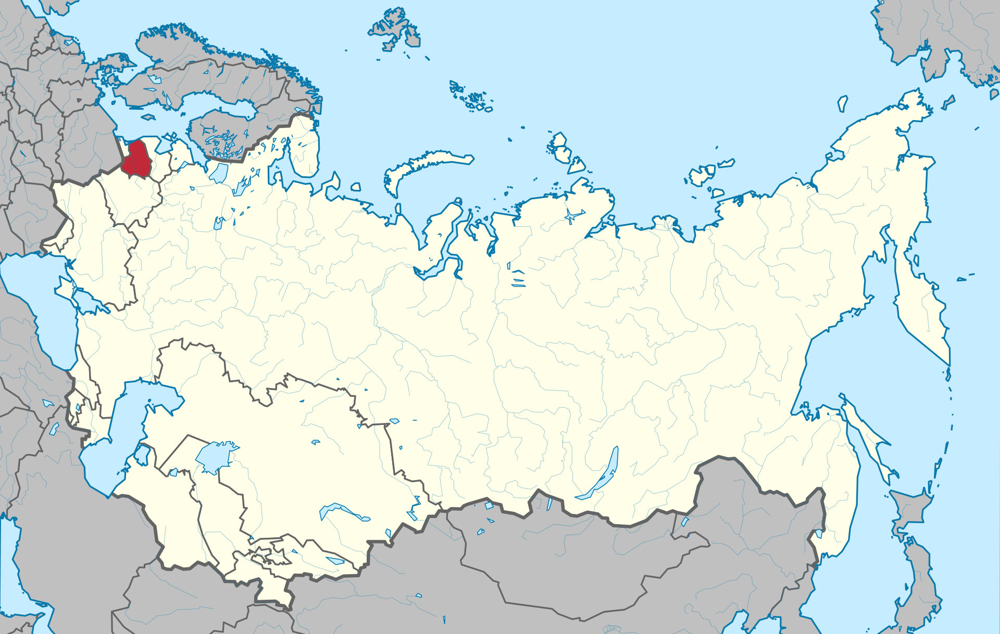

ЛССР
Лито́вская Сове́тская Социалисти́ческая Респу́блика (лит. Lietuvos Tarybų Socialistinė Respublika, Lietuvos TSR) (ЛССР, Советская Литва) — союзная советская социалистическая республика. Одна из республик СССР в период 1940—1990 годов, территория и границы которой с 1946 года совпадали с территорией и границами сегодняшней Литовской Республики (не принимая во внимание лишь незначительные изменения границ с Белоруссией). ЛССР располагалась на западе европейской части СССР, гранича на севере с Латвийской ССР, на юге и востоке — с Белорусской ССР, на юго-западе с Калининградской областью РСФСР и Польшей. На западе омывалась Балтийским морем. Площадь — 65,2 тыс. км². Столица — Вильнюс. Была единственной республикой в составе СССР с преимущественно католическим населением. 11 марта 1990 года Верховный Совет ЛССР издал закон о переименовании государства в Литовскую Республику и провозгласил акт о восстановлении независимости Литвы. 6 сентября 1991 года Государственный Совет СССР признал независимость Литвы.
Карта ЛССР c 21 июля 1940 года — 11 марта 1990 года года
[ОБРАТНО НА ГЛАВНУЮ] [ОБРАТНО К РЕСПУБЛИКАМ]